Relationships page (IntelliSketch dialog box)
Sets which relationships are recognized by IntelliSketch as you draw. Set the relationships you want to recognize, and clear the relationships you do not want to recognize. Clear all relationships to turn IntelliSketch off.
- End point
-
Recognizes the endpoint of an element. For example, you can draw a new line at the end point of another line or arc.
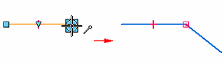
- Midpoint
-
Recognizes the midpoint of an element, such as the midpoint of a line. For example, you can draw a new line at the midpoint of an existing line. You can also use midpoint to align two elements to one another. For example, you can add a vertical relationship between the midpoint of one line and the center of a circle.
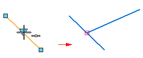
- Point on element
-
Recognizes a point along an element. For example, you can draw a new line at a point on an existing element. You could then use a dimension to control the exact distance along the element you want.
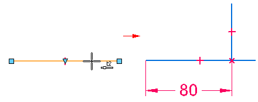
- Center point
-
Recognizes the center point of an arc or circle. For example, you can draw a new circle at the center point of an existing circle or arc.
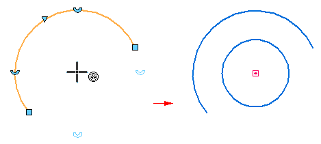
- Silhouette point
-
Recognizes the silhouette points on an arc, circle or ellipse. For example, when you draw a new line, you can touch the silhouette point on a circle. When you click, the new line is connected to the silhouette point on the existing circle.
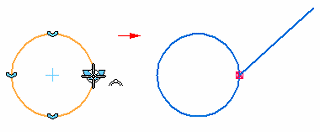
- Intersection point
-
Recognizes the intersection of two elements, such as two lines or an arc and a line. For example, you can draw a new line at the actual or theoretical intersection of two existing elements.
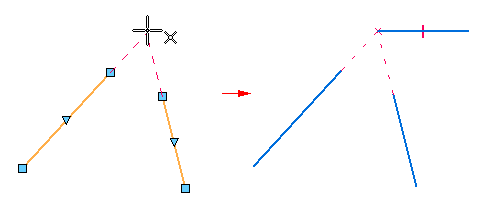
- Edit point
-
Recognizes the edit points on a curve.
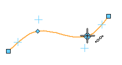
- Curve control vertex
-
Recognizes a control vertex point on a curve.
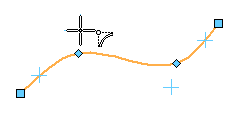
- Pierce point
-
Recognizes where a 3D curve, a sketch, or an edge passes through (pierces) the active profile plane. For example, you can use a connect relationship to position the element you are drawing to where a profile element on another reference plane pierces the current profile plane. A pierce point is useful when drawing the sketches required to create the cross sections and path curves required for a swept feature.
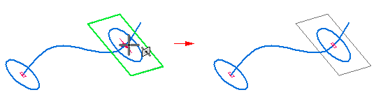
- Ellipse axis point
-
Recognizes an axis point on an ellipse or partial ellipse. For example, you can apply a horizontal relationship to axis points on an ellipse to control its orientation. You can also apply dimensions to ellipse axis points.
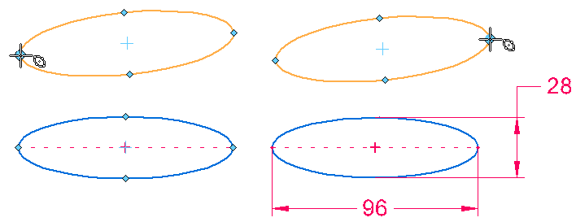
- Parallel
-
Recognizes whether a line is parallel to another line. For example, when you draw a new line, you can touch another line that you want the new line to be parallel to, then move the cursor to be approximately parallel to the first line. When the parallel indicator is displayed, click, and a parallel relationship is added to the new line.
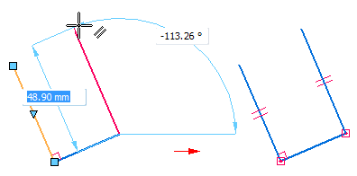
- Perpendicular
-
Recognizes whether a line is perpendicular to another line, or a whether line is perpendicular to an arc or circle. For example, when you draw a new line, you can position the cursor such that the perpendicular indicator is displayed. When you click, a perpendicular relationship is added to between the two lines.
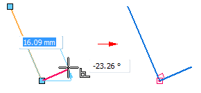
- Tangent
-
Recognizes whether an element is tangent to an adjacent element, such as a line, arc, or circle. For example, when you draw a new line that is connected to an existing arc, you can position the cursor such that the tangent indicator is displayed. When you click, a tangent relationship is added between the line and arc.
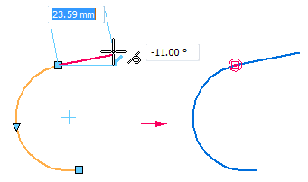
- Horizontal or Vertical
-
Recognizes whether a line is horizontal or vertical with respect to the x-axis of the profile plane. For example, you can position the cursor such that the vertical indicator is displayed when you are drawing a line. When you click, a vertical relationship is added to the line.
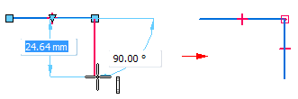
- Extensions (point-on and tangent)
-
Allows you to display an extension of a line that creates a point-on or tangent relationship with another element.
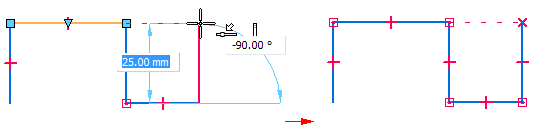